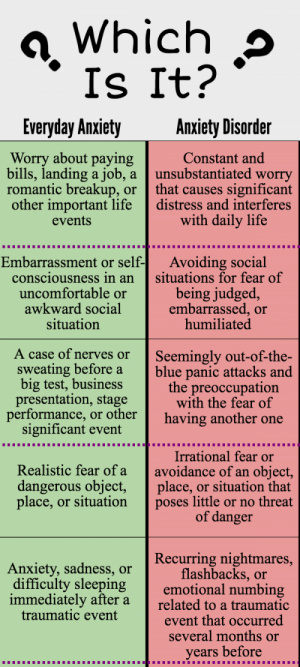

Think you might have anxiety?
You are not alone.
It is normal to experience anxiety, but excessive anxiety is destructive and greatly hinders a person's ability to function.
If you answer yes to most of the items on this list, you probably have anxiety
and should seek professional help.

- Obsessive Thoughts
- Going over thoughts repetitively
- Replaying previous conversations
- Inability to set aside worry and live in the present
- Irritability
- Always feeling "on-edge"
- Racing thoughts
- Easily startled by unexpected events
- Unable to Focus
- Too overwhelmed to break down tasks step by step
- Feeling like your mind "goes blank" when needing to focus
- Second guessing yourself prevents productivity
- Tense Muscles
- Tightened shoulders
- Clenched fists
- Chest pain(see anxiety attacks)
- Insomnia
- Inability to fall or stay asleep
- Ruminating thoughts at night that keep you awake
- Cannot relax and find a comfortable position
- Fatigue
- Consistently feeling mentally drained
- Frequent napping to escape from daily stress
- Tension in your brain
- Avoidance
- Feeling the need to "escape" should something go wrong
- Indecisiveness to the point of inaction
- Fearing failure
- Fearing the worst
- Overplanning for situations that have not happened yet
- Trying to read people's minds and assuming they look down on you
- Paranoia
- Anxiety Attacks
- Sweaty palms
- Chest pain
- Hyperventilating
- Irrational Phobias
- Claustrophobia: fear of enclosed spaces
- Aerophobia: fear of flying
- Glossophobia: fear of public speaking
Disclaimer: I am not a licensed practitioner or therapist. If you or someone you know is in a mental crisis ( whether or not you or they are contemplating
suicide), call this #:
Suicide Prevention Hotline:1-800-273-TALK (8255)